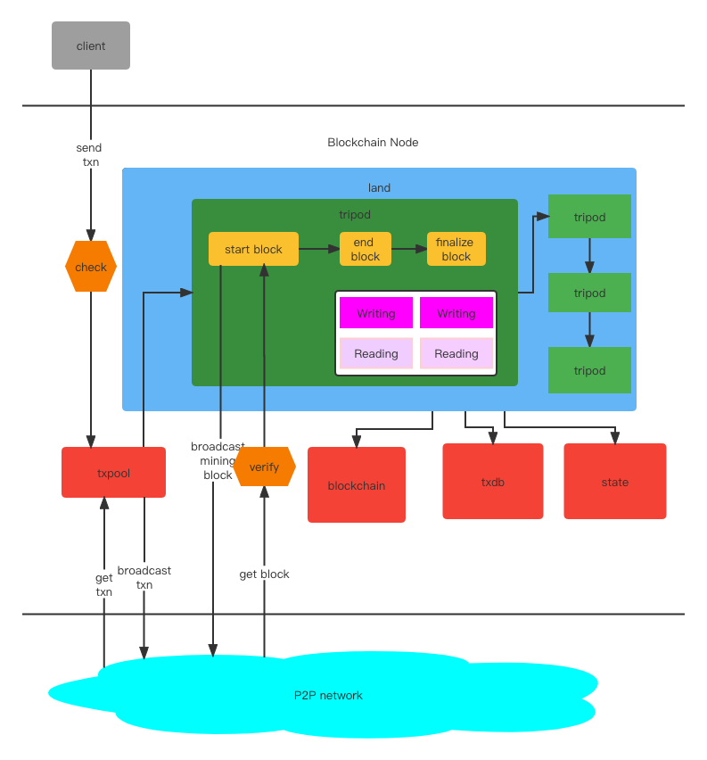
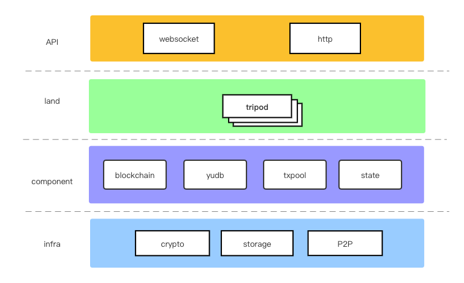

介绍
yu(禹) 是一个用golang开发的 简单易用 且 高度可定制化的区块链框架。 现有的绝大多数区块链（公链与联盟链）都可以用 yu 来开发出来。
我为什么要开发 yu(禹)
现如今的区块链框架，要么上手门槛很高，要么可定制化的程度很低，要么社区不活跃停止维护了。所以我才自己开发了 这款区块链框架。 目的是为了让开发者们可以更简单快速、更深入的上手区块链开发的核心。
yu(禹)可以定制哪些功能
- 可使用多种编程语言开发（尚未完成）
- 定制共识算法，包括但不仅限于pow、pos、poa、pbft等等
- 自定义区块验证逻辑、交易验证逻辑、从交易池中打包交易的规则
- 在区块生成周期的各个阶段插入自定义的操作，包括控制何时执行交易
- 自定义链上交易(即Writing，在以太坊中称为交易) 和 查询(Reading)
- 自定义链结构（包括分叉逻辑）和 交易池逻辑
- 可以使用【依赖注入】来管理各个业务模块（Tripod）
快速开始
安装
go get github.com/yu-org/yu
源代码地址：https://github.com/yu-org/yu/blob/main/apps/quickstart/chain.go
开发一个链上的 Writing 和 Reading
package main
import (
"github.com/yu-org/yu/apps/poa"
"github.com/yu-org/yu/core/context"
"github.com/yu-org/yu/core/startup"
"github.com/yu-org/yu/core/tripod"
"net/http"
)
type QuickStart struct {
*tripod.Tripod
}
func NewQuickStart() *QuickStart {
tri := &QuickStart{
tripod.NewTripod(),
}
// 此处需要手动将自定义的 Writing 注册到 tripod 中，
tri.SetWritings(tri.WriteA)
// 此处需要手动将自定义的 Reading 注册到 tripod 中
tri.SetReadings(tri.ReadA)
return tri
}
type WriteRequest struct {
Key string `json:"key"`
Value string `json:"value"`
}
// 此处定制开发一个 Writing
// Writing会被全网节点共识并执行
func (q *QuickStart) WriteA(ctx *context.WriteContext) error {
// 设置该 writing 所需消耗的lei (lei和gas同义)
ctx.SetLei(100)
// 解析请求体
req := new(WriteRequest)
err := ctx.BindJson(req)
if err != nil {
return err
}
// 将数据存入链上状态中。
q.Set([]byte(req.Key), []byte(req.Value))
// 向链外发射一个event
ctx.EmitStringEvent("execute success")
return nil
}
type ReadRequest struct {
Key string `json:"key"`
}
// 此处定制开发一个 Reading
func (q *QuickStart) ReadA(ctx *context.ReadContext) {
req := new(ReadRequest)
err := ctx.BindJson(req)
if err != nil {
ctx.Err(http.StatusBadRequest, err)
return
}
value, err := q.Get([]byte(req.Key))
if err != nil {
ctx.ErrOk(err)
return
}
ctx.JsonOk(value)
}
在main函数中添加 tripods
func main() {
// 启用poa tripod的默认配置
poaCfg := poa.DefaultCfg(0)
// 启用yu的默认配置
yuCfg := startup.InitDefaultKernelConfig()
poaTri := poa.NewPoa(poaCfg)
qsTri := NewQuickStart()
startup.DefaultStartup(yuCfg, poaTri, qsTri)
}
运行
go build -o yu-example
./yu-example
至此，一条区块链便启动起来了。 后续可以加入更多区块链节点来构建区块链网络。
基本原理
流程总览

从客户端发起一个交易到链上， 会先经过 txpool 的检查， 当检查通过后才会被放入交易池当中 并且 广播给其他区块链节点。
从 P2P 网络里接收到来自其他节点广播的交易，检查通过后放入 txpool 中（不再广播）
land运行，开始生成区块，并且对区块进行一系列的处理：包括挖矿出块、广播、验证来自其他节点的区块、执行区块内交易、将区块存入链 等等。 在这个过程中
可以自由控制的事情有非常多,你可以通过它实现你想要的任何共识算法、分片方式、出块时间、打包交易方式、选择何时执行交易 等等。 与blockchain，
txdb, state的交互也在这个过程中。
每个区块经过 land 内所有 自定义tripod的逻辑之后， 会进入下一个区块阶段，生成下一个区块并处理，周而复始下去。
组件
组件
核心组件
以下的 blockchain，txdb，txpool 均为interface， 内置默认的实现， 如果开发者有特殊需求，可自行重新实现interface
- blockchain: 链结构，负责存储区块数据 并 组织链结构与分叉逻辑。
- txdb:
yu的数据库，存储所有区块中的具体交易数据、 交易执行后的event和error。 - txpool: 交易池，负责验证和缓存从外部发来的交易。
- state: 存储状态， 储存着每个交易执行后的状态，比如账户余额等。
- tripod: 运行区块链 和 供开发者定制逻辑 的 基本最小单元， 开发者可以定制多个tripod并将他们排序组合装载入
land里供框架调用。
底层组件
- store: 存储层，支持 kv、sql、 fs 等多种形式的存储，且均为interface，开发者可以指定需要的存储引擎（比如kv目前具备
badger和boltdb两种存储引擎） 目前state内的存储是用boltdb实现的， 而blockchain和txdb内的存储使用sqlite实现的 - p2p: 点对点传输网络，用来发现网络中的节点以及传播交易和区块等。
- keypair: 公私钥的非对称加密算法，目前支持
sr25519和ed25519。该组件以interface形式，可自行扩展其他加密算法。

区块链
blockchain组件就是区块链结构的持久化存储，全网统一维护的链结构。 注意：该结构中并不存储具体的交易数据和交易执行的结果，这部分数据存储在txdb中。
接口
具体实现的代码在这里
blockchain实现了基本的链结构的存储和处理逻辑。以下为核心功能的接口，开发者如有需求，可自行定制属于自己的链存储方式和处理逻辑：
func ConvergeType() ConvergeType
ConvergeType()返回链的收敛类型（即区块以何种形式被最终确定下来）
众所周知，在区块链中，同一个时刻是可能有多个节点出块的，因此形成分叉。 如果不收敛，系统会不知道哪条链为主链的。所以需要收敛，而收敛方式目前最常见的有几种：
最长子链(Longest)： 最长的那条分支会被认为是主链，该方式会被回滚。
最重子链(Heaviest): 子链数量最多的分叉会被认为是主链， 该方式会被回滚。
敲定(Finalize): 通过投票等方式对区块或者链进行投票 来最终敲定某个分叉成为主链，正常情况下被敲定的区块无法被回滚。
func GetGenesis() (*CompactBlock, error)
func SetGenesis(b *CompactBlock) error
从链内获取创世区块，把创世区块存入链。
func AppendBlock(b *CompactBlock) error
func GetBlock(blockHash Hash) (*CompactBlock, error)
func UpdateBlock(b *CompactBlock) error
AppendBlock(block)将区块加入到链的末尾
GetBlock(blockHash)根据区块哈希获取具体的区块
UpdateBlock(block)以区块哈希为索引更新区块数据
func Children(prevBlockHash Hash) ([]*CompactBlock, error)
func Finalize(blockHash Hash) error
func GetEndBlock() (*CompactBlock, error)
func LastFinalized() (*CompactBlock, error)
Children(blockHash) 根据一个区块哈希获取它的所有子区块
Finalize(blockHash) 最终共识敲定一个区块
GetEndBlock() 获取最后一个未敲定区块
LastFinalized() 获取最后一个敲定的区块
txdb
txdb存储所有区块中的具体交易数据、 交易执行后的 event 和 error。
接口
代码在这里
以下为核心功能的接口，开发者如有需求，可自行定制属于自己的txdb
func GetTxn(txnHash Hash) (*SignedTxn, error)
func SetTxn(stxn *SignedTxn) error
func ExistTxn(txnHash Hash) bool
GetTxn(txnHash)根据交易的哈希值获取交易数据
SetTxn(stxn)把交易数据存入txdb（以交易哈希为索引）
ExistTxn(txnHash) 查看是否有该交易
func SetResults(results []Result) error
func SetResult(result Result) error
将执行结果（event或者error）存入txdb中
交易池
接口代码定义在这里
以下为核心功能的接口，开发者如有需求，可自行定制属于自己的交易池
func BaseCheck(*SignedTxn) error
func TripodsCheck(stxn *SignedTxn) error
func NecessaryCheck(stxn *SignedTxn) error
BaseCheck()插入交易数据到交易池的时候，会做一些基础检查，基础检查有: 交易数据是否过大，交易池容量是否已达上限，交易中的签名是否合法，是否有
交易重复。前三者如果检查不通过会返回错误， 交易重复的时候会忽略该条消息但是不会返回错误。
TripodsCheck() 基础检查完毕之后，会进行tripods检查，此为开发者自行定义的交易检查规则。
NecessaryCheck()表示必要性检查，只检查交易数据是否过大、签名是否合法以及 tripods检查。 在节点收到来自P2P网络的区块之后，同步
区块中的交易数据时做该检查，检查后直接存入txdb。
func Insert(txn *SignedTxn) error
Insert()表示插入交易数据到交易池， 该功能内部带有 BaseCheck 和 TripodsCheck两类检查， 只有通过检查才会被真正插入交易池，否则会返回错误。
func Pack(numLimit uint64) ([]*SignedTxn, error)
func PackFor(numLimit uint64, filter func(*SignedTxn) error) ([]*SignedTxn, error)
Pack(numLimit)表示从交易池最多打包numLimit个交易，被打包的交易会被标记， 但是不会立马从交易池中删除。
PackFor(numLimit, filter) 比 Pack多一个过滤功能，所有被打包的交易必须通过filter的过滤，如果filter返回一个错误，则该交易不会被打包。
func GetTxn(hash Hash) (*SignedTxn, error)
func Reset(*Block) error
GetTxn(hash) 根据交易哈希值 获取交易数据。
Reset(*Block) 在交易池中清除给定区块中的交易，因为它们已经被打包。
鼎
tripod
概述
tripod是整个yu框架的核心所在，开发者通过实现它的interface来定义自己的业务逻辑。 它由三部分构成：
- 自定义区块验证规则和交易检查逻辑
- 控制区块的生命周期从而实现深度定制化开发。生命周期有四个阶段：
initChain,startBlock,endBlock,finalizeBlock。 其中只有initChain是只有在创世区块的时候才被调用的，后面三个是每次区块都会被调用。 （个性化共识算法便可以用区块生命周期来实现） - 自定义
交易(Writing) 、查询(Query) 和P2P请求处理（p2pHandler）
接口
代码定义在这里
func Name() string
func SetChainEnv(env *ChainEnv)
Name()返回tripod的名称。
SetChainEnv(*ChainEnv)将ChainEnv装填进tripod中，方便后续调用。(ChainEnv介绍在context与chainEnv)
func CheckTxn(*SignedTxn) error
func VerifyBlock(block *Block) bool
checkTxn()是开发者自定义的交易检查逻辑，前面的章节提到过当外部有交易进来插入txpool的时候，会执行BaseChack 和 TripodsCheck 这两步检查，
而TripodsCheck便是在这里定义，每个tripod都可以定义自己的交易检查逻辑。
VerifyBlock()是开发者自定义的区块校验逻辑，区块链每收到一个外部广播来的区块都需要校验过后才能进行后续处理，不同的链有对区块不同的校验方式，所以
开发者可以自己定制校验逻辑。 每个tripod都可以定义自己的交易检查逻辑。
func InitChain()
func StartBlock(block *Block)
func EndBlock(block *Block)
func FinalizeBlock(block *Block)
InitChain()只会在区块链启动的时候被调用一次，专门用来定义处理创世区块。
StartBlock()定义区块生成时的阶段的逻辑。
EndBlock()定义区块结束时候的逻辑，一般会在这里执行交易并且将区块存入区块链中。
FinalizeBlock()定义区块的敲定阶段（即最终共识）的逻辑。如果区块链是finalize类型的链，则需要定制这部分逻辑，否则便不必要。
依赖注入
我们可能在yu中开发许多个Tripod，而不同的Tripod之间可能存在依赖关系。比如，当开发者开发一个名为质押的 Tripod 的时候，它可能需要依赖资产这个 Tripod。
为了方便开发者更方便的管理Tripod依赖。 yu 提供了依赖注入的功能。
type Staking struct {
*tripod.Tripod
asset *asset.Asset `tripod:"asset"`
}
如上所示，已知我们已经有一个Asset Tripod。 现在我们开发质押模块，需要依赖Asset中的
某些函数，那么我们只需要在Staking结构体中声明 asset 变量 并添加tag（tripod:"asset"）。
这是个固定语法tripod:<TripodName>，添加完之后，我们只需要正常地启动yu就可以了：
startup.SyncAndStartup(Staking.New(), asset.NewAsset())
如上简单。 SyncAndStartup()是启动yu的必要步骤，在你的代码里只需调用一次即可， Startup()会自动加载这些Tripod并在运行时完成依赖注入。
land
land用来装载所有的tripod 供框架调用。
land内部流程图

状态
state是链上状态存储，比如A给B发起一次链上转账之后，A和B的账户余额信息都会存储下来。 以下我们把每个交易中的 所有对状态存储的操作 称作一个事务。
state中事务具备原子性， 比如一个交易中一共有3个修改状态的操作，那么这3个操作要不然都能修改成功，要么都不成功。
举例如下:
func (a *A) DoTest(ctx *context.WriteContext) error {
a.State.Set(a, []byte("yu"), []byte("yu")) // 1. 修改状态
err := DoOther()
if err != nil {
return err
}
a.State.Set(a, []byte("qi"), []byte("qi")) // 2. 修改状态
}
上述代码中，一共有两处 修改状态 的操作， 如果代码在第一处执行成功， 但是在DoOther()这里执行出错返回，那么第二处的修改状态就无法完成了，此时
框架会一并把第一处的状态修改 取消掉 来保证原子性。
目前内部暂时只支持kvdb的存储形式。 状态存储 以区块为单位，按顺序依次执行每个区块内的事务都存入到数据库中。
代码在这里
func StartBlock(blockHash)
StartBlock()在区块链运行的 start block阶段调用，用来告知state当前的区块哈希。
func SetCanRead(blockHash)
SetCanRead()设置当前可以被读的区块中的状态。 一个区块交易执行完毕被存入链后，可能并不是立马就允许被读到的，尤其是finalize类型的链，需要
等到该区块被finalize之后该区块内执行的结果状态才可以被外界读到。 当然非finalize类型的链可以在区块被存进链后立马就被读到。
func Commit() (Hash, error)
Commit()提交该区块内所有事务，并返回该区块下的状态树的 stateroot。
func Discard()
Discard()取消当前事务。
func DiscardAll()
DiscardAll()取消当前区块内所有的事务。
func NextTxn()
NextTxn()表示当前事务执行完，开始执行下一个事务。
P2P网络
p2p是区块链的网络根基，对于一个可定制化区块链框架而言，yu允许开发者自由使用P2P网络的功能，开发者可以在ChainEnv中调用到它。
该接口的底层实现来源于libp2p
接口
代码在这里 ，核心功能如下：
LocalID() peer.ID
GetBootNodes() []peer.ID
ConnectBootNodes() error
LocalID()返回本地节点的 p2p ID
GetBootNodes() 返回p2p网络中bootnodes节点们的 p2p ID， bootnodes在配置文件中配置。
ConnectBootNodes() 连接这些bootnodes
AddTopic(topicName string)
PubP2P(topic string, msg []byte) error
SubP2P(topic string) ([]byte, error)
AddTopic()在P2P网络中增加一个topic，用作订阅发布的主题。
PubP2P()往这个topic中发送消息。
SubP2P()从这个topic中订阅数据。
RequestPeer(peerID peer.ID, code int, request []byte) (response []byte, err error)
SetHandlers(handlers map[int]dev.P2pHandler)
RequestPeer()往特定的p2p节点上发送请求数据，code为请求类别，可自定义。（除了100和101，这两个是框架预定义的code,100是P2P节点连接比对数据的时候用；
101是同步交易数据的时候用）
SetHandlers()设置处理来自P2P网络里来的请求，每个code对应一个handler， handler的接口在这里 ，开发者可定制开发这里的逻辑。
开发者手册
本章节将详细介绍 如何使用 yu开发区块链的细节。即如何构建自己的 tripod
配置文件默认路径是 yu_conf/kernel.toml
配置文件
yu的配置文件的格式是.toml。
配置内容分以下几个部分， 代码在这里
- 节点自身配置
- 各组件配置
- P2P网络相关配置
yu 默认的配置文件路径为 yu_conf/kernel.toml。 当然，如果不想手动填写配置文件，也可以像快速开始里一样启用命令行
-dc=true 来利用默认配置。 默认配置的源码地址在这里
节点配置
源码样式：
// 0: local-node
// 1: master-worker
RunMode RunMode `toml:"run_mode"`
// serve http port
HttpPort string `toml:"http_port"`
// serve websocket port
WsPort string `toml:"ws_port"`
// log out level:
// panic, fatal, error, warn, info, debug, trace
LogLevel string `toml:"log_level"`
LeiLimit uint64 `toml:"lei_limit"`
- Runmode: 为节点运行方式， 0为单节点形式运行，1为
master-worker形式运行（master-worker形式暂不支持） - HttpPort: http监听地址，服务于外部调用的端口配置。
- WsPort: websocket监听地址，服务于外部调用的端口配置。
- LogLevel: 打印Log的等级，从上到下依次有
panic,fatal,error,warn,info,debug,trace - LeiLimit： 每个区块里可以被消耗的
lei的上限
配置示例：
run_mode = 0
http_port = "7998"
ws_port = "8998"
log_level = "info"
lei_limit = 50000
各组件配置
blockchain配置源码:
type BlockchainConf struct {
ChainDB SqlDbConf `toml:"chain_db"`
}
- ChainDB: 用来存储区块链的sql数据库
txdb配置源码:
type txdbConf struct {
BaseDB SqlDbConf `toml:"base_db"`
}
- BaseDB: 用来存储
txdb的sql数据库。
txpool配置源码:
type TxpoolConf struct {
PoolSize uint64 `toml:"pool_size"`
TxnMaxSize int `toml:"txn_max_size"`
}
- PoolSize: 交易池池大小，如果超过该大小，则后续交易将不会被放进交易池
- TxnMaxSize：最大交易的数据量大小，如果一条交易超过该配置，则不会被放进交易池
state配置源码:
type StateConf struct {
KV StateKvConf `toml:"kv"`
}
目前 state只支持kvdb这一种存储方式，未来还会开放更多存储形式
配置示例:
[block_chain.chain_db]
sql_db_type = "sqlite"
dsn = "chain.db"
[yu_db.base_db]
sql_db_type = "sqlite"
dsn = "txdb.db"
[txpool]
pool_size = 2048
txn_max_size = 1024000
[state.kv.index_db]
kv_type = "bolt"
path = "./state_index.db"
[state.kv.node_base]
kv_type = "bolt"
path = "./state_base.db"
p2p网络配置
源码样式:
// For listening from blockchain network.
P2pListenAddrs []string `toml:"p2p_listen_addrs"`
// To connect other hosts as a p2p network.
Bootnodes []string `toml:"bootnodes"`
ProtocolID string `toml:"protocol_id"`
// 0: RSA
// 1: Ed25519
// 2: Secp256k1
// 3: ECDSA
NodeKeyType int `toml:"node_key_type"`
NodeKeyRandSeed int64 `toml:"node_key_rand_seed"`
NodeKey string `toml:"node_key"`
// Only RSA has this param.
NodeKeyBits int `toml:"node_key_bits"`
// When use param 'NodeKey', 'NodeKeyFile' will not work.
NodeKeyFile string `toml:"node_key_file"`
- P2pListenAddrs: 表示区块链节点监听的P2P协议的地址
- Bootnodes: 链接P2P网络中的其他区块链节点，用来同步历史区块
- ProtocolID: P2P网络里自定义的协议名称
- NodeKeyType: P2P节点的key的加密类型，用来生成p2p地址的 key。目前支持四种加密算法：
0表示RSA1表示Ed255192表示Secp256k13表示ECDSA
- NodeKeyRandSeed: 生成p2p节点的key的种子，用来生成P2P地址的key。当该项不为空时，则无需配置
NodeKey了。 - NodeKey：P2P地址的key，用来生成p2p地址。当
NodeKeyRandSeed不为空时，该项可不填。 - NodeKeyBits: key的比特位，此配置只有
RSA这个加密算法才需要。 其他类型的加密算法并不需要配置该参数。 - NodeKeyFile: 读取p2p地址的key的文件， 只有
NodeKey为空的时候，系统才会读取该配置项。
配置示例：
p2p_listen_addrs = ["/ip4/127.0.0.1/tcp/8887"]
protocol_id = "yu"
node_key_type = 1
node_key_rand_seed = 1
Context 与 ChainEnv
在快速开始中，我们已经看到了如何自定义一个 Writing，此处有两个参数， 一个是context，一个是ChainEnv,他们分别表示两个不同
的用途。
Context 表示与链外交互的上下文信息。 它包括 调用者地址、传入的参数、
event、error。
- 客户端调用者（即发起交易的人）传入的参数会以json的形式序列化，并按
string -> interface{}这样map的方式存在context中。
我们通过context获取 客户端调用者的密码学地址和 调用者传入的参数。 从context获取参数的时候可以以任意go基础类型 去获取参数。 如果参数类型为自定义的，则需要先通过context.Get(paramName)获取到interface再自行转化。可以直接获取参数的类型有:
common.Hash([32]byte)
common.Address([20]byte)
string
[]byte
bool
int, int8, int16, int32, int64
uint, uint8, uint16, uint32, uint64
float32, float64
- 同时如果需要向链外返回
event的时候， 也需要通过context来完成(ctx.EmitEvent([]byte))。
ChainEnv 包含了所有链相关的一切环境组件，其中有 blockchain、
txdb、 txpool、 state、Execute 、 P2pNetwork。 可供开发者直接操作到框架底层的组件。
Writing 和 Reading
正常情况下，开发者们对 Writing 和 Reading 会用到的更多一些， 因为这基本是完全业务层面的对外读写接口。所以本节我们看一下在yu当中，如何
使用它们。代码在这里
定义如下:
type (
Writing func(ctx *WriteContext) error
Reading func(ctx *ReadContext) error
P2pHandler func([]byte) ([]byte, error)
)
-
Writing在以太坊等其他区块链当中被称作交易， 说到底其实就是一次对于链上状态的写操作， 所以这样的操作会同步到全网。
当需要修改链上状态的时候， 需要调用chainEnv.KVDB来进行状态修改。注意，chainEnv.kvdb内的set、get、delete函数的第一个参数必须为当前tripod指针， 比如 快速开始里的e.State.Set(e, ..., ...)
currentBlock为当前交易所在的区块。
当需要发送event到链外的时候，调用ctx.EmitEvent()。 -
Reading就是链上查询，它不对链上状态有任何修改，所以该操作并不会被同步到全网。
状态查询调用env.KVDB.Get()或者env.KVDB.GetByBlockHash()。前者是查询现在主链上已经达成最终共识的状态；后者是查询具体的某个区块上的 历史状态的。
respObj用来把查询到的状态值返回到链外。 -
P2pHandler是定义处理处理来自P2P网络中的请求，比如节点需要广播或者对特定节点发送处理请求的时候，可定制此函数来完成自定义功能。 -
注入Tripod中：当构建好自己所有的Writing和Reading的时候， 需要我们调用tripod.SetWritings()把所有Writing注入到tripod中， 并且调用tripod.SetReadings()把所有Reading注入到tripod中。 -
装填到land里：框架提供了一个 启动入口 只要在启动的时候 把自己构建的所有tripod通过调用SyncAndStartup(...Tripod)来完成装填，由此告知框架我们定制了哪些tripod。
关于 defaultTripod
当你不需要自定义控制 区块周期 而只想开发 Writing 和 Reading 的时候， defaultTripod
便可以帮你少写很多代码， 你需要将它放在你自定义实现的 tripod 结构体的第一个成员变量即可（必须要省略变量名来达到继承 defaultTripod的效果）。如下：
type Example struct {
*tripod.Tripod
}
区块周期
前面 有详细介绍过 tripod内关于区块周期的概念。 通过定制区块周期，我们可以实现很多深度的功能， 比如共识算法。 下面我们以
pow共识 为例，代码原址在这里 。
- 初始化区块链，构造创世区块
func (p *Pow) InitChain() {
// 构造创世区块，并存入链中。
chain := p.env.Chain
gensisBlock := &types.Block{
Header: &types.Header{},
}
err := chain.SetGenesis(gensisBlock)
if err != nil {
return err
}
// 启动一个线程来实时拉取P2P网络中来自于其他节点的数据
go func() {
for {
msg, err := p.env.P2pNetwork.SubP2P(StartBlockTopic)
if err != nil {
logrus.Error("subscribe message from P2P error: ", err)
continue
}
p.msgChan <- msg
}
}()
return nil
}
- 区块开始时，构造区块
func (p *Pow) StartBlock(block *Block) {
pool := p.env.Pool
// 在本地节点出块之前如果收到来自其他节点的区块，验证合法之后将跳过挖矿，直接将该区块存入链中。
// 如果没有或者区块不合法，则本地节点开始挖矿。
if p.UseBlocksFromP2P(block) {
logrus.Infof("--------USE P2P block(%s)", block.Hash.String())
return nil
}
// 从交易池中打包交易出来
txns, err := pool.Pack(p.packLimit)
if err != nil {
return err
}
......
//开始挖矿：计算哈希
nonce, hash, err := spow.Run(block, p.target, p.targetBits)
if err != nil {
return err
}
......
// 挖到矿以后，将该区块广播到P2P网络中去。
return p.env.P2pNetwork.PubP2P(StartBlockTopic, rawBlockByt)
}
- 区块结束时
func (*Pow) EndBlock(block *Block) {
chain := p.env.Chain
pool := p.env.Pool
// 执行区块中的交易
err := p.env.Execute(block)
if err != nil {
return err
}
// 将区块存入链中持久化
err = chain.AppendBlock(block)
if err != nil {
return err
}
return pool.Reset(block)
}
- 最终共识，敲定区块：
由于 pow共识 一般是不需要最终共识的这个敲定阶段的， 因为他们有最长子链或者最重子链等证明算力的方式。 所以这里我们
FinalizeBlock()不用实现。
func (*Pow) FinalizeBlock(_ *Block) {
return nil
}
到此为止，一个基于 sha256的 pow共识机制 便完成了。
建立区块链网络
当我们完成配置文件之后，便可以开始自己动手构建区块链网络了。
本章节中，我们选择编译 example 来启动区块链节点，该example当中
装载了 pow共识 和 asset模块.
当然，我们也可以自定义tripod来替换掉pow和asset 或者增加更多的 tripod。
首先我们利用该配置文件在本地启动第一个区块链节点:
INFO[0000] register Writing(Transfer) into Tripod(asset)
INFO[0000] register Writing(CreateAccount) into Tripod(asset)
INFO[0000] register Query(QueryBalance) into Tripod(asset)
INFO[2021-07-25 11:11:09] I am /ip4/127.0.0.1/tcp/8887/p2p/12D3KooWHHzSeKaY8xuZVzkLbKFfvNgPPeKhFBGrMbNzbm5akpqu
INFO[2021-07-25 11:11:11] start block...................
INFO[2021-07-25 11:11:11] prev-block hash is (0x0000000000000000000000000000000000000000000000000000000000000000), height is (0)
INFO[2021-07-25 11:11:11] [[[Mining a new Block!!!]]]
655111533297e8df7319ce54a0ed74f643940831f388211a1fe985960c82fe75
INFO[2021-07-25 11:11:11] append block(1)
INFO[2021-07-25 11:11:13] start block...................
INFO[2021-07-25 11:11:13] prev-block hash is (0x0000337defe7b4412c872bd42a6d21626ea6a57c3d695379efb8b447d67a1bbd), height is (1)
INFO[2021-07-25 11:11:13] [[[Mining a new Block!!!]]]
c64e251d8617a96b80a1d8ff5b74cceef20fa9750bdbc7d095f87791ce01fc88
INFO[2021-07-25 11:11:13] append block(2)
INFO[2021-07-25 11:11:15] start block...................
INFO[2021-07-25 11:11:15] prev-block hash is (0x00005ecc8b50fbc01d32330c5cdd1574a1f0ead527a94f54f326ecaad0473ffb), height is (2)
INFO[2021-07-25 11:11:15] [[[Mining a new Block!!!]]]
819da2117ca553f098a1b16c1ad95f2e10498a5df855f5980d8a54c183b302e2
b062934ef239c48553a43591d451878a1f31abe0a72400f18d7daf4055e22625
INFO[2021-07-25 11:11:15] append block(3)
注：上面输出的信息中， I am后面的一串地址为node1自己生成的p2p地址， 节点2 和 节点3 需要连接这个地址来构建区块链网络。
然后我们在另一个路径下写好配置文件部署第二个节点并启动:
INFO[0000] register Writing(Transfer) into Tripod(asset)
INFO[0000] register Writing(CreateAccount) into Tripod(asset)
INFO[0000] register Query(QueryBalance) into Tripod(asset)
INFO[2021-07-25 11:11:17] I am /ip4/127.0.0.1/tcp/8886/p2p/12D3KooWEsGugZfk1eWUGf4oUXksvfA9QoCX8etf745SVEyiZFXQ
INFO[2021-07-25 11:11:17] start to sync history from other node
INFO[2021-07-25 11:11:17] fetch history blocks from (1) to (3)
INFO[2021-07-25 11:11:19] start block...................
INFO[2021-07-25 11:11:19] prev-block hash is (0x000046787b43397f7aa4bd1b59ecc9a25e0691086db15ef1613c0e7eeefe3c9a), height is (3)
INFO[2021-07-25 11:11:19] USE P2P block(0x00007536afbeaf2ed6e84c449b7b17836280490711b85e676b77c21d75d31f22)
INFO[2021-07-25 11:11:19] append block(4)
INFO[2021-07-25 11:11:21] start block...................
INFO[2021-07-25 11:11:21] prev-block hash is (0x00007536afbeaf2ed6e84c449b7b17836280490711b85e676b77c21d75d31f22), height is (4)
INFO[2021-07-25 11:11:21] USE P2P block(0x0000ebd7752fc71f0cc27740763c27ec9db87dd91fd781f07316744c98196806)
INFO[2021-07-25 11:11:21] append block(5)
上图输出中 fetch history blocks from (1) to (3) 表示节点2启动时从节点1处获取到从高度1到3的历史区块
最后我们在第三个路径下写好配置文件部署第二个节点并启动:
INFO[0000] register Writing(Transfer) into Tripod(asset)
INFO[0000] register Writing(CreateAccount) into Tripod(asset)
INFO[0000] register Query(QueryBalance) into Tripod(asset)
INFO[2021-07-25 11:11:24] I am /ip4/127.0.0.1/tcp/8885/p2p/12D3KooWGcd7wei9ndo1uSZKap3s8X2E3kxN674xGo8prJUBSezD
INFO[2021-07-25 11:11:24] start to sync history from other node
INFO[2021-07-25 11:11:24] fetch history blocks from (1) to (7)
INFO[2021-07-25 11:11:26] start block...................
INFO[2021-07-25 11:11:26] prev-block hash is (0x00002b56e478552f309b208e90cae288f8f809e2ccefd788730d55ea5e39e1e1), height is (7)
INFO[2021-07-25 11:11:26] USE P2P block(0x0000f86034bf5e2fe3cd308d08ad0dab1b61c41e7f722c489c14e1215acd0990)
INFO[2021-07-25 11:11:26] append block(8)
INFO[2021-07-25 11:11:28] start block...................
INFO[2021-07-25 11:11:28] prev-block hash is (0x0000f86034bf5e2fe3cd308d08ad0dab1b61c41e7f722c489c14e1215acd0990), height is (8)
INFO[2021-07-25 11:11:28] USE P2P block(0x000018f47c74dafca4a54596d5284fb320050f1cd3817a87864074cb602e2d15)
INFO[2021-07-25 11:11:28] append block(9)
上图输出中 fetch history blocks from (1) to (7) 表示节点3启动时从节点1处获取到从高度1到7的历史区块
节点1配置
run_mode = 0
http_port = "7999"
ws_port = "8999"
log_level = "info"
log_output = "yu.log"
lei_limit = 50000
timeout = 60
[p2p]
p2p_listen_addrs = ["/ip4/127.0.0.1/tcp/8887"]
protocol_id = "yu"
node_key_type = 1
node_key_rand_seed = 1
[kvdb]
kv_type = "bolt"
path = "./yu.db"
[block_chain.chain_db]
sql_db_type = "sqlite"
dsn = "chain.db"
[txpool]
pool_size = 2048
txn_max_size = 1024000
节点2配置
run_mode = 0
http_port = "7998"
ws_port = "8998"
log_level = "info"
log_output = "yu.log"
lei_limit = 50000
timeout = 60
[p2p]
p2p_listen_addrs = ["/ip4/127.0.0.1/tcp/8886"]
# This configuration is the P2P address printed out when node 1 starts up
bootnodes = ["/ip4/127.0.0.1/tcp/8887/p2p/12D3KooWHHzSeKaY8xuZVzkLbKFfvNgPPeKhFBGrMbNzbm5akpqu"]
protocol_id = "yu"
node_key_type = 1
[kvdb]
kv_type = "bolt"
path = "./yu.db"
[block_chain.chain_db]
sql_db_type = "sqlite"
dsn = "chain.db"
[txpool]
pool_size = 2048
txn_max_size = 1024000
节点3配置
run_mode = 0
http_port = "3998"
ws_port = "3998"
log_level = "info"
log_output = "yu.log"
lei_limit = 50000
timeout = 60
[p2p]
p2p_listen_addrs = ["/ip4/127.0.0.1/tcp/8885"]
# This configuration is the P2P address printed out when node 1 starts up
bootnodes = ["/ip4/127.0.0.1/tcp/8887/p2p/12D3KooWHHzSeKaY8xuZVzkLbKFfvNgPPeKhFBGrMbNzbm5akpqu"]
protocol_id = "yu"
node_key_type = 1
[block_chain.chain_db]
sql_db_type = "sqlite"
dsn = "chain.db"
[kvdb]
kv_type = "bolt"
path = "./yu.db"
[txpool]
pool_size = 2048
txn_max_size = 1024000